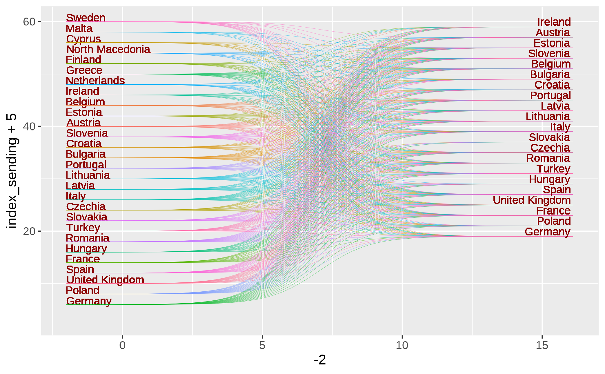

if(!require(pacman)) install.packages("pacman")
pacman::p_load(tidyverse, ggbump, cowplot, wesanderson)Erasmus students exchange
Overview
This week 10 of #TidyTuesday 2022 theme is #Erasmus students exchange in the European countries.

The data set is from Erasmus student mobility, Data.Europa.eu and Wimdu.co to discover the most popular Erasmus destinations.
The idea is to make a network of sending and receiving countries, let’s have a look at the data.
erasmus <- readr::read_csv('https://raw.githubusercontent.com/rfordatascience/tidytuesday/master/data/2022/2022-03-08/erasmus.csv')The set is made of information about students, such as the age, the nationality, the lenght of stay, the gender, academic year, and others. I selected some of them, to extract the information I needed to make the network.
Looking at the participant_age we see that we have some misleading data:
df %>% pull(participant_age) %>% summary()For this reason the best way is to filter students between 17 and 28 years old. Also, mobility_duration is quite surprising:
df %>% pull(mobility_duration) %>% summary()The median value of the students’ stay is ONE day, while the mean is just a little above TWO days. Very few students stay more than 10 days, but someone reaches a max of 273 days (39 weeks).
Student participants are almost all solo participants as the median shows to be ONE student per observation, TWO students on average, with a max value of 279. So that, to have a picture of the phenomenon select the average value of the student participants as representative.
df %>% pull(participants) %>% summary(participants)Finally, gender, Females are slightly more than males, just a little above 50%.
tbl <-df %>% pull(participant_gender) %>% table()
cbind(n=tbl,pct=round(prop.table(tbl)*100,2))This is our new dataset on which we will build our network.
df <- df %>%
group_by(academic_year) %>%
filter(between(x = participant_age,17,28),
mobility_duration>3) %>%
summarise(m_participants=mean(participants),
sending_country_code,receiving_country_code,
participant_gender,.groups="drop") %>%
ungroup() %>%
select(-m_participants) %>%
distinct()
kableExtra::kable(head(df))%>%
kableExtra::kable_styling(latex_options = "scale_down")At this point I’d like to have the full country’s name, and use {ISOcodes} package. I do that because I’d like to make a spatial visualization as well. The package contains the values for the countries’ abbreviations coded as “Alpha_2”. I needed to adjust UK and Greece. To verify this you might need to use the count() function and the str_detect() a couple of times before identifying all the values that needs an adjustment.
library(ISOcodes)
isocodes<-ISOcodes::ISO_3166_1
isocodes2 <- isocodes%>%
mutate(Alpha_2=case_when(Alpha_2=="GB"~"UK",
Alpha_2=="GR"~"EL",
TRUE ~ Alpha_2))Some more manipulations for selecting just the countries in the dataset.
sending_country_code <- df %>% count(sending_country_code) %>% select(-n) %>% unlist()
receiving_country_code <- df %>% count(receiving_country_code) %>% select(-n) %>% unlist()
sending <- isocodes2 %>% filter(Alpha_2 %in% sending_country_code)
receiving <- isocodes2 %>% filter(Alpha_2 %in% receiving_country_code)
sending_unlst <- sending %>% count(Name) %>% select(-n) %>% unlist()
receiving_unlst <- receiving %>% count(Name) %>% select(-n) %>% unlist(){ggplot2} package provides spatial data, as you might notice, students of the Erasmus programs come from all over the World. Still, some countries’ name adjustments are needed.
world <- map_data("world")%>%
filter(!region=="Antarctica")%>%
mutate(region=case_when(region=="UK"~ "United Kingdom",
region=="Czech Republic"~"Czechia",
region=="Moldova"~"Moldova, Republic of",
region=="Palestine"~"Palestine, State of",
region=="Russia" ~ "Russian Federation",
TRUE ~ region))sending_geo <- world %>% filter(region %in% sending_unlst)
sending_geo_full <- sending %>%
select(Alpha_2,Name) %>%
left_join(sending_geo,by = c("Name"="region"))
receiving_geo <- world %>% filter(region %in% receiving_unlst)
receiving_geo_full <- receiving %>%
select(Alpha_2,Name) %>%
left_join(receiving_geo,by = c("Name"="region"))Then finally, make the centroids. We will use this in the visualization further below.
sending_geo_centroids <- sending_geo_full %>%
group_by(Name) %>%
mutate(avg_long = mean(range(long)),avg_lat = mean(range(lat))) %>%
count(Alpha_2,Name,avg_long,avg_lat)
receiving_geo_centroids <- receiving_geo_full %>%
group_by(Name) %>%
mutate(avg_long = mean(range(long)),avg_lat = mean(range(lat))) %>%
count(Alpha_2,Name,avg_long,avg_lat)df2 is our new data set, made of countries’ names and spatials:
df2 <- df %>%
left_join(sending_geo_centroids,by=c("sending_country_code"="Alpha_2")) %>%
left_join(receiving_geo_centroids,by=c("receiving_country_code"="Alpha_2")) %>%
rename(sending_country_name=Name.x,receiving_country_name=Name.y,
avg_long_s=avg_long.x,avg_lat_s=avg_lat.x,
avg_long_r=avg_long.y,avg_lat_r=avg_lat.y)%>%
select(-n.x,-n.y)
df2 %>% headorder_sending and order_receiving will be very useful for a third visualization in which all the sending countries will be matched with students’ destinations. We will see this further below.
order_sending <- df2%>%
count(sending_country_name,sort=TRUE)%>%
mutate(index_sending=seq(1,length(sending_country_name),1),
index_sending=rev(index_sending))%>%
drop_na()
order_receiving <- df2%>%
count(receiving_country_name,sort=TRUE)%>%
mutate(index_receiving=seq(1,length(receiving_country_name),1),
index_receiving=rev(index_receiving))%>%
drop_na()And here is the data set that we will use to make the rank network:
erasmus_network <- df2 %>%
select(academic_year,
sending_country_name,receiving_country_name) %>%
distinct() %>%
left_join(order_sending,by="sending_country_name") %>%
left_join(order_receiving,by="receiving_country_name") %>%
mutate(group = glue::glue("{sending_country_name}-{receiving_country_name}")) %>%
distinct() %>%
drop_na() %>%
arrange(index_sending) %>%
mutate(year_id=case_when(academic_year=="2014-2015"~1,
academic_year=="2015-2016"~2,
academic_year=="2016-2017"~3,
academic_year=="2017-2018"~4,
academic_year=="2018-2019"~5,
academic_year=="2019-2020"~6)) %>%
relocate(year_id) %>%
arrange(year_id)
erasmus_network %>% headLoad the packages for setting a nice font.
library(showtext)
library(sysfonts)
library(extrafont)
showtext::showtext_auto()
showtext::showtext_opts(dpi=320)
font_add_google(name="Noto Sans",family="notosans")erasmus_network%>%
arrange(index_sending)%>%
ggplot()+
geom_text(aes(x = -2, y = index_sending+5, label = sending_country_name),
vjust=0,
hjust="left", color = "darkred", size = 3) +
ggbump::geom_sigmoid(aes(x = -2, xend = 16.1,
y = index_sending+5, yend =index_receiving+18,
group=factor(group),color=receiving_country_name),
alpha = .6, smooth = 10, size = 0.1,show.legend = F) +
geom_text(aes(x = 16, y = index_receiving+17.5, label = receiving_country_name),
vjust=-1.5, hjust="right", color = "darkred", size = 3) +
coord_cartesian()+
theme_void()Or a simplified version:

Let’s select Top 5 sending countries:
erasmus_network2 <- erasmus_network %>%
filter(sending_country_name%in%c("Italy",
"Germany",
"United Kingdom",
"Romania","Spain")) %>%
mutate(sending_country_name=case_when(sending_country_name=="United Kingdom"~"UK",
TRUE~sending_country_name))%>%
count(year_id,academic_year,sending_country_name) %>%
group_by(academic_year)%>%
mutate(rank=rank(x=n))%>%
ungroup()
erasmus_network2 %>% head()library(ggthemes)
ggplot(erasmus_network2,
mapping=aes(academic_year,rank,
group=factor(sending_country_name),
color=factor(sending_country_name)))+
geom_point(size = 7) +
geom_text(data = erasmus_network2 %>% filter(year_id == min(year_id)),
aes(x = year_id - .1,
label = sending_country_name), size = 4, hjust = 1) +
geom_text(data = erasmus_network2 %>%
filter(year_id == max(year_id)),
aes(x = year_id + .1, label = sending_country_name),
size = 4, hjust = 0,check_overlap = T) +
geom_bump(size = 2, smooth = 8) +
labs(y = "RANK",
x = "Academic Year",
title="Erasmus Top 5 student exchange countries",
subtitle="Ranks of the highest sending frequency",
caption="DataSource: Erasmus student mobility | Data.Europa.eu | Wimdu.co\nDataViz: Federica Gazzelloni | #TidyTuesday Week 10 Erasmus") +
scale_y_reverse() +
scale_color_manual(values = wesanderson::wes_palette(5, name = "Royal2"))+
cowplot::theme_minimal_grid(font_size = 14, line_size = 0) +
theme(legend.position = "none",
panel.grid.major = element_blank(),
plot.title = element_text(color="#ffc7ba"),
plot.subtitle = element_text(color="#ffc7ba"),
plot.caption = element_text(color="#ffc7ba",size=8),
axis.text = element_text(color="#ffc7ba"),
axis.title = element_text(color="#ffc7ba"),
plot.background = element_rect(color="black",fill="black"),
panel.background = element_rect(color="black",fill="black"))Here is the final part of this post, I set the spatials for making a map visualizaton of the sending to receiving countries.
sending_geo_full2<-sending_geo_full%>%mutate(direction="sending")
receiving_geo_full2<-receiving_geo_full%>%mutate(direction="receiving")
geo_full <-rbind(sending_geo_full2,receiving_geo_full2)ggplot(geo_full2)+
geom_polygon(data = world,
aes(x=long,y=lat,group=group),fill="grey78",color="grey5")+
geom_polygon(aes(x=long,y=lat,group=group,fill=direction),alpha=0.3)+
geom_point(data=centroids,
aes(x=avg_long, y=avg_lat,color=direction,shape=direction))+
coord_map("ortho", orientation = c(33.366449, 24.022840, 0))+
facet_wrap(vars(direction))+
scale_x_continuous("Latitude", expand=c(0,0)) +
scale_y_continuous("Longitude", expand=c(0,0)) +
theme_void()+
theme(legend.position = "none")